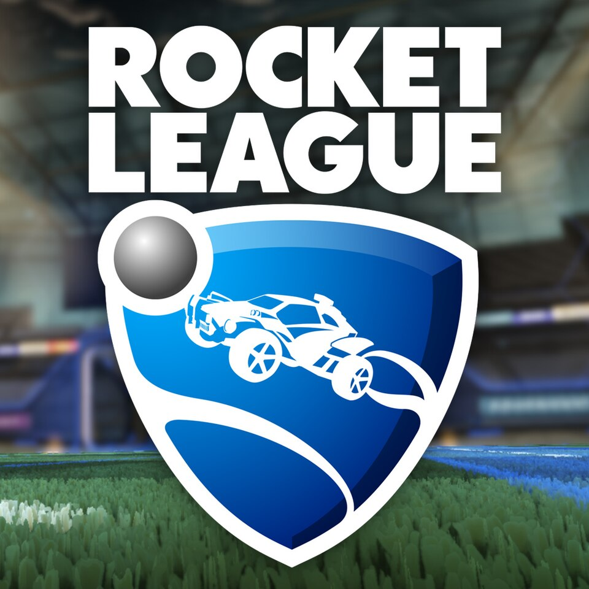

Pasar un buen rato con tus amigos.
Recomiendo jugar al rocket league sobre todo con amigos en los modos 2vs2 y 3vs3 para que el partido sea mas rapido y dinamico.
El mejor juego para para jugar con tus amigos y divertir o enfadarte con ellos

Por que merece la pena jugar al Rocket League.
- Tiene varios modos de juego a nivel aprendizaje y a nivel competitivo, como el 1vs1, 2vs2 y 2vs2.
- Cuando llegas a tener un nivel bueno empiezas a jugar torneos en los cuales vas subiendo tu caracteristigas y tus rangos llegando a competir en torneos mundiales en los cuales puedes ganar una gran cantidad de dinero si llegas a las rondas finales o incluso ganandolo.
- Tienes otro modo de entrenamiento para mejorar tu air dribling y ganar mas duelos aereos a otros jugadores y aprender el conocido pinch para meter goles a una velocidad estratosferica.
Los canales de youtube para ver estos videos son:
As webs que podemos consultar son: canal de Pereira ou tamén canal de Agustin51